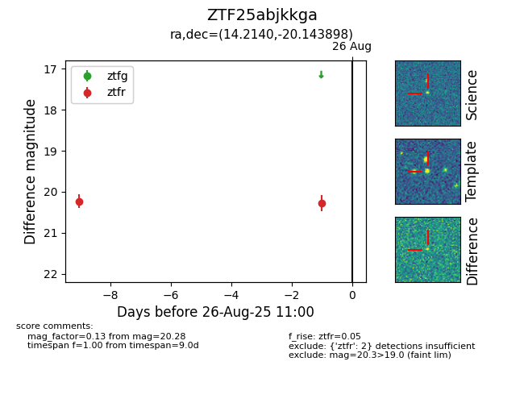

Target ZTF25abjkkga at 2025-08-26 11:00, see:
FINK: fink-portal.org/ZTF25abjkkga
Lasair: lasair-ztf.lsst.ac.uk/objects/ZTF25abjkkga
ALeRCE: alerce.online/object/ZTF25abjkkga
alt names
ZTF25abjkkga (ztf,fink)
coordinates:
equatorial (ra, dec) = (14.2140,-20.14390)
galactic (l, b) = (133.2850,-82.90648)
photometry
last ztfr=20.28
2 ztfr detections
